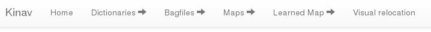
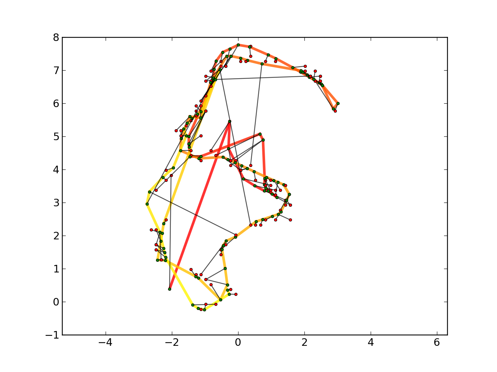

Testbed est un outil permettant d’automatiser les tests de relocalisatioin visuelle.
C’est un site web python basé sur le framework django. Il faut donc l’avoir installé au préalable Testbed utilise une base de données sqlite.
- Django
- matplotlib
Il est nécessaire d’avoir installé kinav dans le workspace ROS comme indiqué dans la partie Installation de cette documentation, de telle manière à pouvoir utiliser rosrun kinav_node depuis la ligne de commande.
Les résultats des tests seront créés dans le répertoire $HOME/results, il faut donc créer ce répertoire :
mkdir $HOME/results
De même, nous considérons que les bagfiles sont dans le répertoire $HOME/bagfiles/
Lorsque ceci est fait, il est alors nécessaire de créer la base de données avec la commande suivante :
python manage.py syncdb
Une fois la base de données créer, il faut lancer le serveur web mais également un script appellé worker.sh qui aura pour tâche de traiter les jobs :
$ python manage.py runserver
Validating models...
0 errors found
July 24, 2014 - 22:25:06
Django version 1.6.5, using settings 'testbed.settings'
Starting development server at http://127.0.0.1:8000/
Quit the server with CONTROL-C.
# dans une autre console
$ ./worker
Testbed permet de créer un dictionnaire, créer des cartes métriques, d’apprendre les caractéristisques visuelles et d’essayer de se relocaliser.
Comme illustré dans l’image, chaque menu permet d’accéder à la liste des occurences, d’en créer une nouvelle et si besoin d’obtenir des détails sur une occurence.
L’image ci-dessous est un exemple de ce que l’on peut trouver dans le détail de chaque relocalisation.
En vert, les positions réelles du robot lorsque l’on cherche à se relocaliser. En rouge, la position estimée par la relocalisation visuelle. Les traits noirs, eux, permettent de lier les couples de points.
